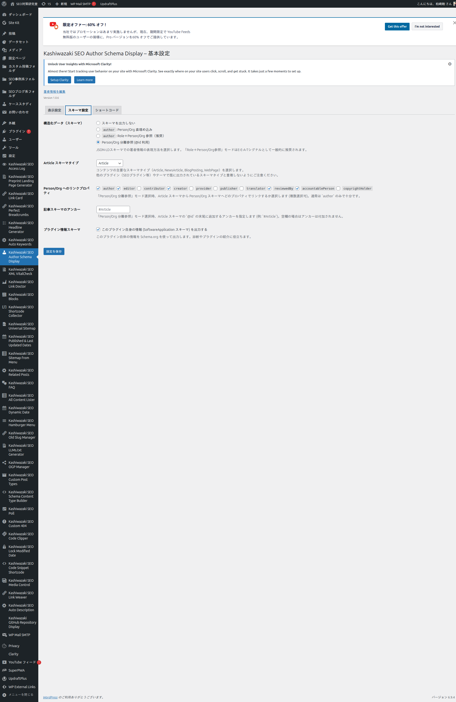

JSON-LDスキーマ出力
Google検索でのE-E-A-Tシグナルを強化するJSON-LD構造化データの出力機能について解説します。
スキーマ出力とは
JSON-LD形式の構造化データをHTMLのhead内に出力し、検索エンジンに著者情報を伝える機能です。Article, NewsArticle, BlogPosting, WebPageの4つのArticleスキーマタイプに対応しています。
設定画面

スキーマモードの選択
4つのモードから選択できます。
「スキーマなし」 — JSON-LDを出力しない。他のSEOプラグインがスキーマを出力している場合に選択します。
「シンプル著者」 — ArticleスキーマのauthorプロパティにPerson/Organizationを直接埋め込みます。最もシンプルな構造です。
「詳細著者（推奨）」 — Role + Person/Orgの参照構造。E-E-A-Tシグナルとして最も効果的です。著者の役割（執筆者・監修者等）を明示できます。
「分離参照」 — Person/Orgスキーマを分離し@idでリンクします。10種類のリンクプロパティ（author, editor, contributor, creator, provider, publisher, translator, reviewedBy, accountablePerson, copyrightHolder）から選択可能です。
Articleスキーマタイプ
| タイプ | 用途 |
|---|---|
| Article | 一般的な記事（デフォルト） |
| NewsArticle | ニュース記事 |
| BlogPosting | ブログ記事 |
| WebPage | 一般的なWebページ |
プラグイン情報スキーマ
チェックボックスで有効化できます。SoftwareApplicationスキーマとしてプラグイン自体の情報をSchema.orgに出力する機能です。
他のSEOプラグイン（Yoast SEO、Rank Math等）がArticleスキーマを出力している場合は、スキーマの重複に注意してください。「分離参照」モードを使うと、既存のArticleスキーマに影響を与えずにPerson/Orgスキーマのみを追加できます。
スキーマ出力モードの比較